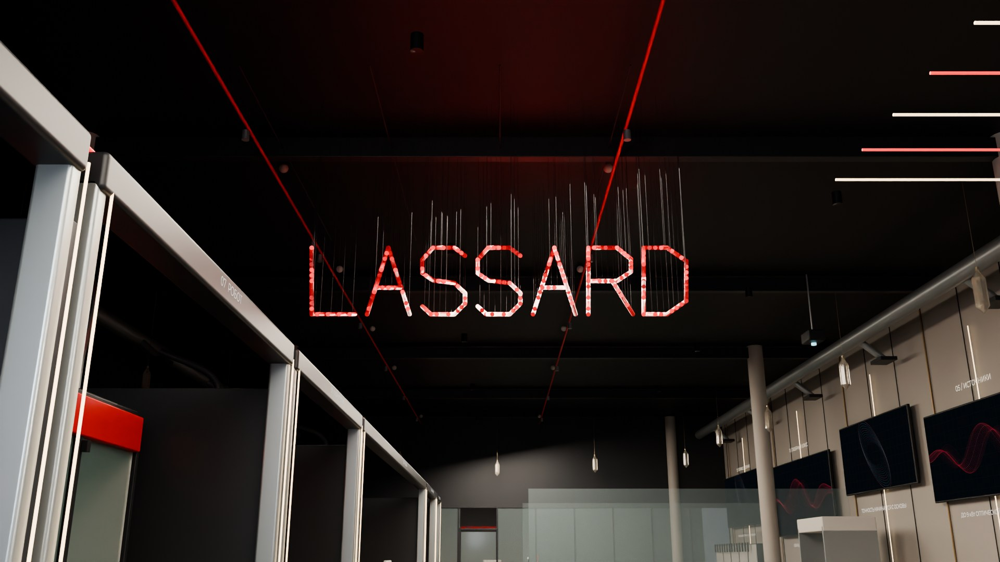

Материал.
Начало.
Высокая стеклянная витрина у входа показывает кристалл и готовый лазерный элемент. Дальше инженер связывает собственные компетенции LASSARD с задачей вашего производства.
Рассмотреть кристалл
Шоурум LASSARD.
Собственное производство.
Решение для вашего предприятия.
 Исследовать пространство ↗
Исследовать пространство ↗Интерактивная концепция шоурума
Посмотрите пространство целиком.
Или подойдите к тому, что важно вам.
Высокая стеклянная витрина у входа показывает кристалл и готовый лазерный элемент. Дальше инженер связывает собственные компетенции LASSARD с задачей вашего производства.
Рассмотреть кристаллКрасные трубки занимают разную глубину.
Один ракурс собирает из них LASSARD.

Найти точку LASSARDКристалл, оборудование, решение.
Весь маршрут в одном коротком пролёте.
Материал, операция и требуемый выпуск.
Первый шаг к подбору оборудования.